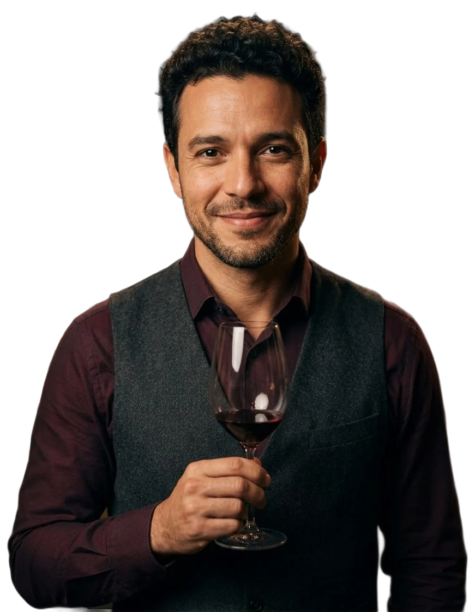

Head Sommelier · Dubai
I find the bottle you didn't know you wanted.
Born in São Paulo, trained in Lisbon, now in Dubai. I run the wine list and the cellar of a fine-dining restaurant, and I would rather listen than recite.
Start with a glassHow I taste a glass
One glass, five notes.
Touriga NacionalDouro, Portugal
the grape I learned on
Seventeen years, laid down well.
- 2009
Commis waiter
São PauloA steakhouse with a long wine list taught me that guests want guidance, not a lecture.
- 2012
Sommelier
LisbonThree years tasting through Portugal, one region at a time, from Vinho Verde to Madeira.
- 2015
Head sommelier
LondonA busy wine bar with forty wines by the glass, and a team of three to train.
- 2019
Wine buyer
LisbonBuying for a restaurant group: visiting growers, building lists, and saying no politely.
- 2022
Head sommelier
DubaiThe list, the cellar and a team of four sommeliers in a fine-dining restaurant.
Employers are not named; roles and dates are illustrative.
A list is a promise.
Every bottle on it has been tasted, every glass poured at the right temperature, and every price is one I can explain at the table.
- 1,100wines on the list, from 18 countries
- 40by the glass, changing every week
- 12non-alcoholic pairings on the menu
- 1rule: no bottle goes on the list untasted
Figures are illustrative.
Pair with the person, not the plate.
Ask first, pour second.
The perfect match on paper means nothing if you do not enjoy the wine. I ask what you like before I suggest anything.
Acidity is food's best friend.
A wine with fresh acidity makes the next bite taste better. When I am in doubt, I go fresher.
The best bottle starts a conversation.
A good pairing gets the table talking about the food, the wine and each other, and never about the price.
A pairing for every guest.
Every menu has a non-alcoholic pairing built with the same care: cold-brewed teas, verjus, ferments and house cordials, matched dish by dish.
Let's open something good.
Open to head sommelier and wine director roles, wine programme consulting for restaurants and hotels, and private tastings.